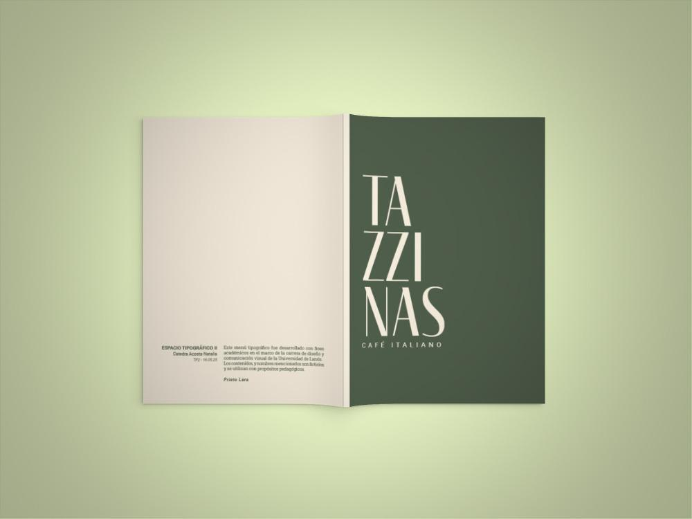

Diseño de un menú para cafetería, enfocado en la organización de la información, la jerarquía visual y la legibilidad a través del uso tipográfico.

Diseñadora en formación con enfoque en comunicación visual y desarrollo de piezas gráficas. Cuento con experiencia en la creación de materiales visuales para distintos soportes, combinando creatividad, criterio estético y atención al detalle.
Lic. en diseño y comunicación visual | Universidad nacional de Lanús | Buenos Aires | en curso 4°
Desarrollé proyectos de diseño que abarcan una gran variedad de formatos y enfoques, como revistas, diarios, menús y afiches, así como en el desarrollo de identidades visuales y sistemas gráficos completos, que incluyen desde piezas pequeñas hasta aplicaciones, implementaciones y mockups.
Manejo de programas aplicadas al diseño y la comunicación

Diseño de un menú para cafetería, enfocado en la organización de la información, la jerarquía visual y la legibilidad a través del uso tipográfico.

Exploración morfológica a partir de imágenes intervenidas, mediante procesos de fragmentación y recomposición

Diseño tipográfico aplicado a la comunicación de un evento, desarrollando un sistema visual que organiza y diferencia las jornadas.